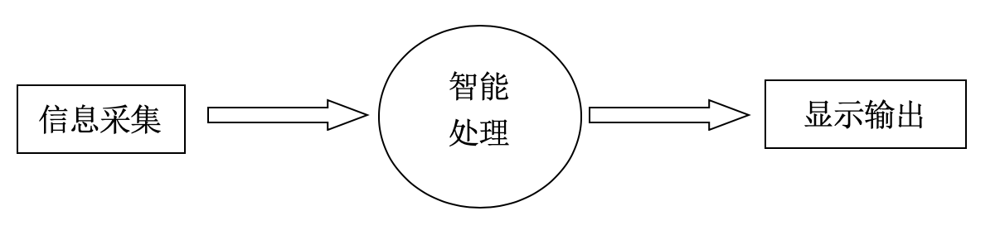

3. 虚谷号和互动媒体¶
传统的媒体，如纸质、电视、广播等，只是完成传播信息的任务，观众只能单向、被动地接受信息，无法进行双向性的交流沟通，缺乏交互性。随着信息技术的广泛应用，人们借助电脑，通过键盘、鼠标、麦克风、传感器、摄像头和数据手套等外围输入设备以及与相应的软件配合就可以实现人机交互的功能。在此背景下，互动媒体应运而生。
3.1. 互动媒体简介¶
“互动媒体”(Interactive media）又称“互动多媒体”、“互动式多媒体”。互动媒体是在传统媒体的基础上加入了交互功能，通过交互行为并以多种感官来呈现信息的一种崭新的媒介形式。观众不仅可以看得到、听得到还可以触摸到、感觉到、闻到而且还可以与之互动，从而获得全新的体验。这种使用计算机交互式综合技术和数字通信网络技术处理多种媒体，而集成的交互系统，被概括地称为“互动媒体”，被广泛应用在了各类展厅中，如博物馆、科技馆、企业展厅等。
互动媒体作品是一个由各种技术综合交融而构成的媒体系统，软硬兼施，虚实结合，比起传统媒体来说更加复杂。要设计一个互动媒体，往往需要结合结构设计与制作、操作与执行、驱动与控制、检测与感知、智能与程序设计和媒体设计等课程的知识，涵盖了机械学、电子学、工程学、自动控制、计算机和人工智能等课程领域，是多种技术的综合应用。2010年左右，我国部分高校开始开设相关的课程，如同济大学、上海纽约大学、清华大学等。温州中学是最早开设这方面课程的中小学校之一。
一个典型的互动媒体作品，大致可以分为信息采集、智能处理和显示输出三个三个方面。普通电脑往往不具备读取通过传感器和输出电平控制方面的功能，要教学这方面的课程，往往会选择在普通电脑上插上一块开源硬件，如Arduino、micro:bit和掌控板之类。虚谷号是一块自带了Arduino的微型电脑，用来做互动媒体作品特别合适。
虚谷号上可以用S4A、Processing、Python等软件编写互动媒体作品。其中S4A适合小学，Processing和Python适合中学。
3.2. S4A和互动媒体¶
S4A由西班牙的Citilab（社会和数字创新中心）在Scratch的基础上开发完成。其最大的修改是在硬件方面进行了拓展，提供了对Arduino的支持，使软件的输入和输出不在局限与传感器板（PicoBoards）和乐高马达，能够创作出功能更加强大的互动作品。
虚谷号预装了S4A，只要刷入标准固件，不用外加硬件，即可正常使用。
s4a的官方网站：http://s4a.cat/
关于S4A更多介绍，请参考本文档的第五部分的S4A专题，或者查看S4A的教程。
3.3. Processing和互动媒体¶
Processing是一款专为设计师和艺术家使用的编程语言，由美国麻省理工学院媒体实验室美学与运算小组( Aesthetics Computation Group )的Casey Reas与Ben Fry创立。Processing的出现，被视为艺术设计创作的一场革命。利用Processing，艺术家可以将抽象的数据呈现为生动的视觉形象。它不仅可以生成唯美的图形，还能编写出功能强大的互动艺术作品。
Processing软件的官方网站：http://www.processing.org/

Arduino的IDE源自Processing，因此二者是联系非常紧密。Processing的范例中提供了一些和Arduino通讯的互动作品。Processing可以读取Arduino的传感器数据，然后把这些数据呈现在屏幕上。这种通信是相互的，也可以用Processing程序作为操作界面，控制电机、扬声器、灯光和相机等设备。当然，其他支持串行通讯的设备也都可以和Processing互动。
关于Processing的更多介绍，请参考本文档的第五部分的Processing专题，或者查看Processing的教程。
3.4. Python和互动媒体¶
Python是一种开源的计算机程序设计语言。随着高中新课标（2017版）的落实，高中全部采用Python语言，有条件的小学和初中都开始从原来的VB转到Python。
利用Python的数据可视化库，如Matplotlib、bokeh和plotly等，也可以设计出交互的艺术作品。Processing也支持Python语法。因为虚谷号是一个稳定运行的电脑，用来展示互动媒体特别合适。
Python的官网网站：https://www.python.org/
关于Python的更多介绍，请参考本文档的第五部分的Python专题，或者查看Python的教程。